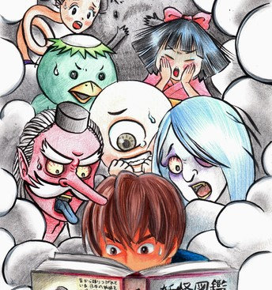
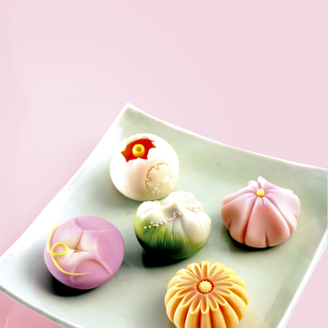
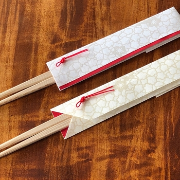
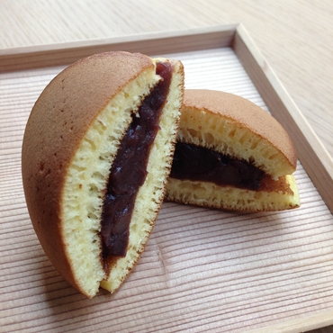

1er jour : conception de l’histoire et création des personnages 2e jour : réalisation du storyboard et de la couverture 3e jour : finitions Durant ce stage intensif animé par Yoshimi Katahira, mangaka et illustratrice vivant en France, tu dessineras ton manga en créant toi-même les personnages, le storyboard et la couverture.
Ateliers démos - 7 > 9 Mars 2019 à 14h
DESSINE UN MANGA
ATELIER JEUNE PUBLIC

Ateliers démos - Samedi 16 Mars 2019 à 13h
SALON DE THÉ WAGASHI
DÉGUSTATION POUR TOUS

Fondée en 1954 à Tokyo, l’École de pâtisserie de Tokio enseigne la fabrication des pâtisseries japonaises et occidentales, ainsi que celle du pain, formant les nouvelles générations de professionnels dans ce domaine. Ses jeunes diplômés viendront à Paris vous montrer leur savoir-faire. La salle de réception de la MCJP se transformera en salon de thé : vous pourrez choisir une pâtisserie parmi une petite sélection et la déguster sur place avec un bol de thé vert matcha. Une autre pâtisserie vous sera également offerte comme cadeau.
Ateliers démos - 8 > 9 Février 2019
PETITS OBJETS EN PAPIER MINO WASHI
ATELIER JEUNE PUBLIC

Département de Gifu - Dans le cadre de l'événement L’artisanat local japonais à la pointe de l’innovation
L’artisanat traditionnel des différentes régions de l’archipel est aux origines du monozukuri, l’art de concevoir des objets. Aujourd’hui encore, le design élégant, la fabrication minutieuse et la haute qualité de ces objets enrichissent la vie quotidienne des Japonais. Cette année, la MCJP et CLAIR Paris présentent des savoir-faire transmis par les artisans jusqu’à nos jours, à partir de trois aspects de la vie des Japonais : l’habillement (i), les arts de la table (shoku) et l’habitat (jû). Au programme, des expositions réunissant un total de 250 objets, des ateliers, des conférences et des projections. ♦ Vendredi 8 février · 18h ♦ Samedi 9 février · 14h et 16h30
Ateliers démos - Samedi 23 Février 2019 14h et 16h
DES DORAYAKI FACILES À FAIRE !
ATELIER CULINAIRE ENFANTS - PARENTS

Réveillez vos papilles avec ces ateliers organisés dans le cadre de la série « Apprendre la culture culinaire japonaise » de Japonismes 2018 ! Faire un dorayaki, c’est très simple : il suffit de préparer deux pancakes entre lesquels on met de l’anko, une délicieuse pâte de haricot rouge sucrée. L’atelier est animé par Yumiko Aihara, journaliste gastronomique, et la démonstration par Takanori Murata, pâtissier et président de la société Marutomi Paris.
Appuyer pour remonter la page